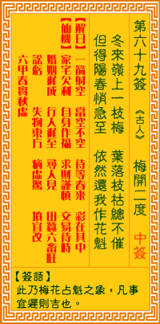

观音灵签第六十九签 【梅开二度】 |
 | |||
冬来岭上一枝梅 叶落枯枝总不摧 探得阳春消息近 依然还我作花魁 |
||||
| 【吉凶】 | 中上签 | 【宫位】 | 辰宫 | |
| 【签语】 | 此卦梅花占魁之象，凡事宜迟则吉也。 | |||
| 【解曰】 | 一箭射空 当空不空 待等春来 彩在其中 | |||
| 【仙机】 | 此签家宅欠利，自身作福，求财谨慎，交易待时，婚姻迟成，行人迟至，六甲春实秋虚，寻人见，田蚕六畜旺，讼亏，失物东方，病虚惊 ，坟宜改。 | |||
| 【详解】 | 就似严冬高山顶上的一株梅花，受尽风霜雨雪的侵袭依然挺立不摇;得悉春天的日子就快要来临了，届时仍是花中之王，谁能比拟? 一箭落空，非空不空，看非景致，消息在中。此签梅花占魁之象，凡事宜早吉利。 本签者梅花占魁之象。凡事宜平吉利者也。冬至。岭上之一枝梅也。虽是叶落枯根。伊亦能傲霜斗雪疏影横斜。放出幽香。为世人报得春之跫音将至。君多年之傲 苦也。必得一报。出头天者。易言之。君之运也。一箭落空非空不空看非景致消息在中者。 此签有”沉冤得雪”之意。意味当事人，不要太悲观。人在时不我予时心态本就消极，如果还为他人所误解，更如哑巴吃黄莲，苦不堪言。在此看看程婴匿孤存赵 的故事，他不但忍辱负重十数年，甚至默默承受不义之丑名，只为了不让忠臣绝后。如此精神情操，今世几人有之?反观自己，不过一时的不顺遂，何苦因此自怨 自艾，只要存心正直，凡事无愧于天地，相信必有时来运转、还你清白之日。 | |||
| 【典故】 | 唐朝时代，梅魁被奸臣宰相害死，儿子梅良玉被救，改名王喜童，进住陈日升的家。梅魁是日升好友，一天，梅花盛开，陈公借梅花拜祭 梅公，祈求有日梅公后代能出人头地，为父报仇。当晚梅花皆被风雨打落，陈公和女二杏元、良玉于是拜求上天再一次梅花盛开，诚心感动了上天，第三天果然见到满园梅花盛开 ，香气袭人，梅开二度，成为千古佳话，后来，梅良玉考中状元，几经挫折，终和陈杏元结婚。《二度梅》故事 | |||